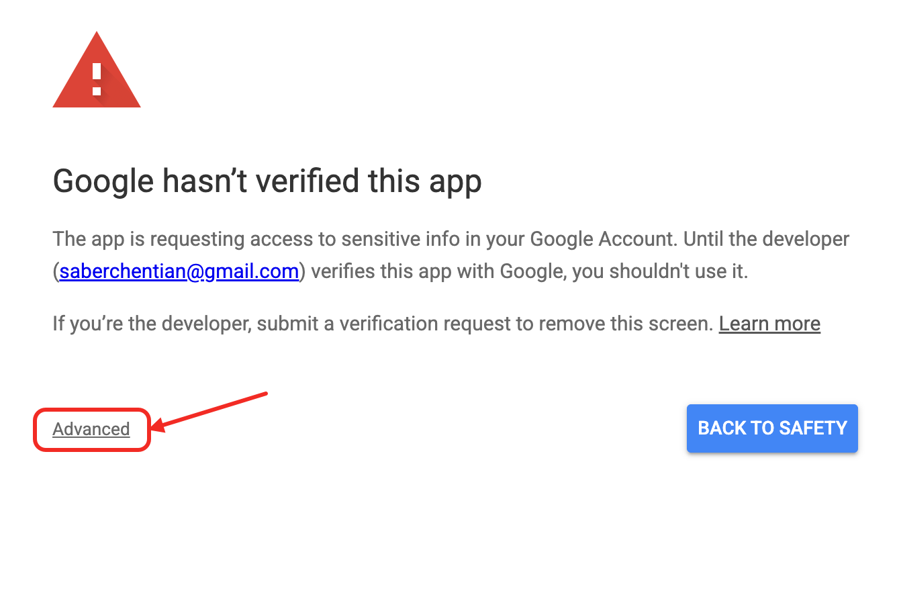
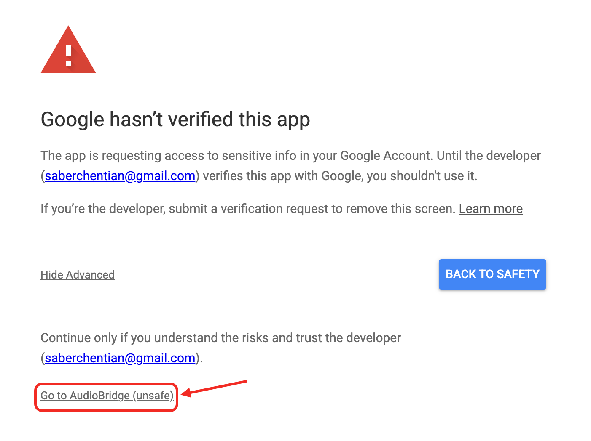
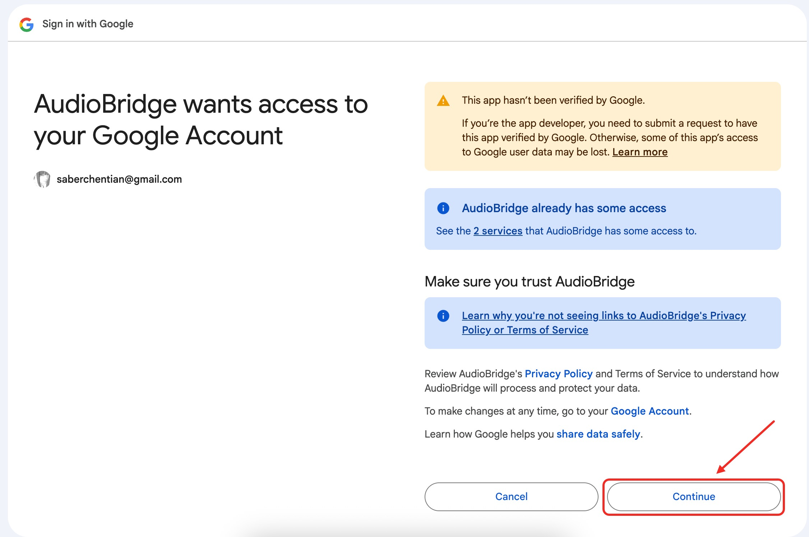

When signing in with Google while using AudioBridge, you may see a page that says "This app isn't verified". This is a standard security notice shown by Google and does not mean that the app is unsafe.
Google requires apps that access certain Google services to complete an external verification process. While this review is in progress, Google automatically shows the "unverified app" notice.
If you understand the reason for this notice and choose to continue, Google allows you to proceed manually. This choice is entirely up to you.
On the Google warning page, click the "Advanced" link to see additional options.

Click the link that allows you to continue to AudioBridge. This simply tells Google that you trust this app.

You will then see the standard Google authorization screen and can continue using AudioBridge normally.

AudioBridge only accesses data that you explicitly choose and does not collect or store your Google data on developer-controlled servers. You can review our Privacy Policy for details.
Once Google completes the verification process, this warning page will no longer appear. No action will be required from users.